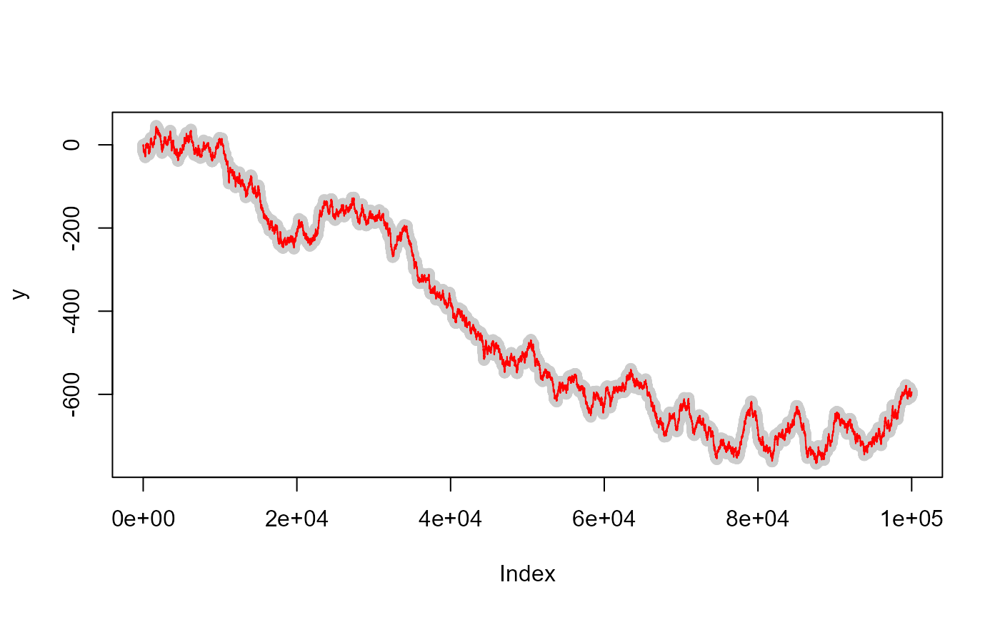

The function exp_smooth() smooths a time series.
library(packageC)
set.seed(10)
y <- cumsum(rnorm(1e5))
ys <- exp_smooth(y, 0.8)
plot(y, col = "grey80")
lines(ys, col = "red")

Model a kernel regression model smoother (KRS) based on a normal distribution and bandwidth estimation.
x0 <- seq(0, 1, length.out = 1000)
fit1 <- mean_var_krs(y, x, x0, 0.01)
fit2 <- mean_var_krs(y, x, x0, 0.03)
fit3 <- mean_var_krs(y, x, x0, 0.06)
plot(x, y, col = "grey")
lines(x0, fit1, col = 2)
lines(x0, fit2, col = 4)
lines(x0, fit3, col = 1)Ricker Simulation Based on Ricker Model
nburn <- 100
n <- 50
y0_true <- 1
sig_true <- 0.1
r_true <- 10
Ntrue <- ricker_simulation(n = n, nburn = nburn, r = r_true, y0 = y0_true)
yobs <- Ntrue * exp(rnorm(n, 0, sig_true))
plot(yobs, type = 'b')Random Number from Wishart distribution
rwishart(3, diag(2))
#> [,1] [,2]
#> [1,] 4.499877 -2.628468
#> [2,] -2.628468 1.633037
# Validation
set.seed(1337)
S = toeplitz((10:1)/10)
n = 10000
o = array(dim = c(10,10,n))
for(i in 1:n){
o[,,i] = rwishart(20, S)
}
mR = apply(o, 1:2, mean)
Va = 20*(S^2 + tcrossprod(diag(S)))
vR = apply(o, 1:2, var)
stopifnot(all.equal(vR, Va, tolerance = 1/16))